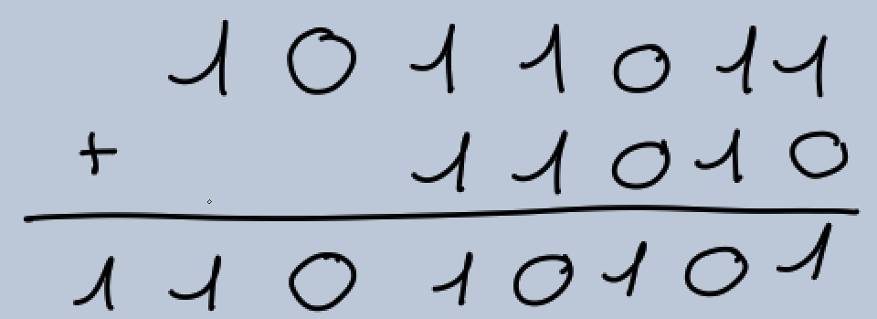
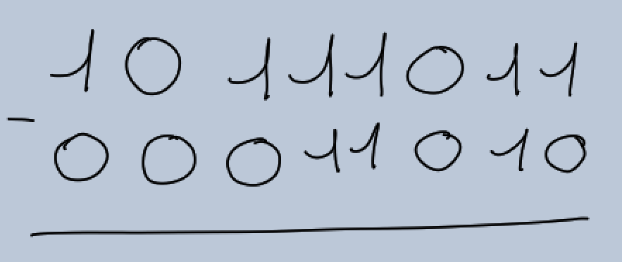
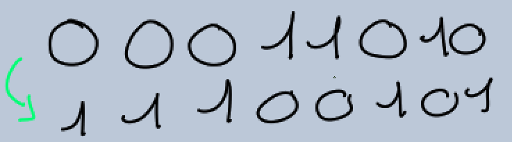
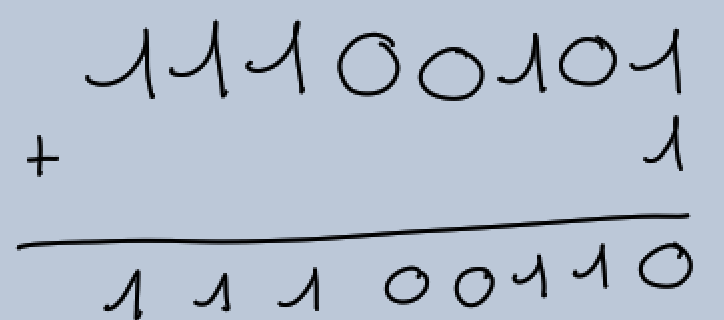
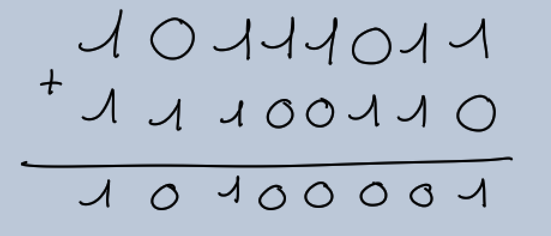

Premiers tests du CSS
M.Flandin
Calcul binaire
I) Addition binaire

II) Soustraction binaire

a) On ne peut pas soustraire deux nombres que s'ils ont le même nombre de bitsb) On effectue le complément à:

c)

d)

e) Le résultat contient le même nombre de bits que le nombre soustrait